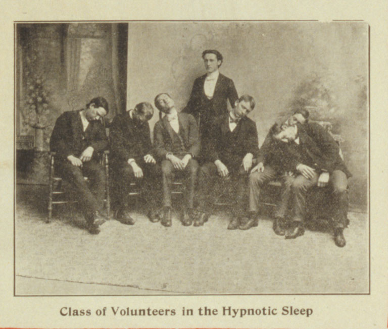

SECTION 23.0.4
There is no strife, no prejudice, no national conflict in outer space as yet. Its hazards are hostile to us all. Its conquest deserves the best of all mankind, and its opportunity for peaceful cooperation many never come again. But why, some say, the moon? Why choose this as our goal? And they may well ask why climb the highest mountain? Why, 35 years ago, fly the Atlantic? Why does Rice play Texas?
Volunteers

We choose to go to the moon. We choose to go to the moon in this decade and do the other things, not because they are easy, but because they are hard, because that goal will serve to organize and measure the best of our energies and skills, because that challenge is one that we are willing to accept, one we are unwilling to postpone, and one which we intend to win, and the others, too.
SECTION 5.5.2
It is for these reasons that I regard the decision last year to shift our efforts in space from low to high gear as among the most important decisions that will be made during my incumbency in the office of the Presidency.
In the last 24 hours we have seen facilities now being created for the greatest and most complex exploration in man's history. We have felt the ground shake and the air shattered by the testing of a Saturn C-1 booster rocket, many times as powerful as the Atlas which launched John Glenn, generating power equivalent to 10,000 automobiles with their accelerators on the floor. We have seen the site where the F-1 rocket engines, each one as powerful as all eight engines of the Saturn combined, will be clustered together to make the advanced Saturn missile, assembled in a new building to be built at Cape Canaveral as tall as a 48 story structure, as wide as a city block, and as long as two lengths of this field.